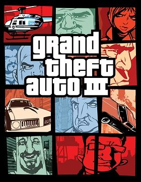

Grand Theft Auto III (PC)



(Rockstar)
As one of the first highly ambitious and innovative titles to be released on the next generation of consoles, GTA III has all of the deliciously over-the-top carnage of games like Carmageddon and Midtown Madness, contained within an innovative free-form game structure and the environment of a real-living city. PC owners are now finally able to enjoy GTA III, complete with improved graphics and customisable mouse-look control, and it’s obvious that the developers have given the title the attention that it deserves.
It’s GTA III’s amazing attention to detail which is most impressive; this particularly applies to the actions and animations of the game’s voiceless protagonist, who gives the finger to anyone who beeps him, turns his head as he backs up a car, and slams a crumpled door shut again after a smash. The city in which the game is set is also amazingly modelled and highly convincing, including everything that you might expect a real city to have – subways, high-rises, freeways, police stations, porno shops and red-light districts; the list goes on. There is also every type of car that you could possibly imagine – sports cars, station wagons, trucks of all types – all available for you to steal of course. The game’s physics are also excellent – the cars are damaged realistically, fall apart as you smash them up, and all handle uniquely.
While the main premise of the game rests on the ability to throw the owner out and drive off with any car that you see in the street, there is much more to the gameplay than that. You assume the role of a small-time escaped crim in the Portland industrial area of the city, and you begin the game accepting jobs from many of the local crime-factions. The game’s narrative is executed in a stylish and somewhat cinematic fashion through the cut scenes that are played when you accept a mission. Although sometimes simplistic in structure, the missions are always imaginative, intriguing, and diverse, keeping the plot rolling along nicely, and in no time you’ll be pulling a huge variety of jobs for people all over the city. There is a nice sense of consequence for your actions created within in the game world – club a gang member to death, and you’ll be set upon by all his gang mates around you; after pissing off the triads, you’ll get shot at when driving through Chinatown.
In line with the ambitious free-form nature of the game, there are so many secrets, bonuses, and hidden missions that it’s easy to lose focus. The city slowly opens up as you complete more missions, and the option is always available to either follow the main storyline, complete any of the many random missions or mini-games that are available, or instead aimlessly wonder the streets looking for opportunities to create mayhem. You can hop in a taxi anytime and run passengers around the city in a mini-game that bears more than a passing resemblance to Crazy Taxi. Or better still, you can piss off the cops and lead them on a high-speed chase through the streets of the city, or knock off a police car yourself and hunt down criminals in a vigilante style mission.
If demented chaos and destruction is your thing, then GTA III will allow you to unleash the fury. Hapless pedestrians are mowed down as they unwittingly wander into your path of destruction, and car chases often end up in pile ups and a chain reaction of exploding cars. Take to the streets for an unprovoked shootout with any of the various crime factions around the city, blasting off the heads and limbs of your opponents in a bloodbath, or scream down the incoming lane of a freeway in a Mac-Truck at breakneck speeds, callously smashing apart and destroying any of the incoming vehicles stupid enough to get in your way.
So how does the experience translate to the PC? While the slick presentation and updated graphics are impressive, you won’t get to see them in their full glory unless you own a fast PC. The lack of a mid-mission save may also annoy some PC gamers, and is indicative of the game’s console nature. While PC gamers won’t be able to resist feeling that the game would have been far better if it was designed from the ground up for the PC, these are feelings worth forgetting for the sake of the many hours of enjoyment offered.
And while the convincing realism of the city is perhaps the game’s biggest strength, occasionally you get the niggling impression that it exists only and solely for your benefit. All the people, cars, and events sometimes appear to be running on rails, where nothing really happens unless you interact with it. While this ultimately detracts from the immersion of the game, its forgivable when you consider how skilfully the developers have approached the enormous task of creating a whole living-breathing city.
Although it may be dismissed by many PC gamers as a mere console port, GTA III deserves recognition for its innovation, style, polish and depth. With the promise of even more convincing environments in the future, GTA III is a definite step in the right direction.
9 Out of 10